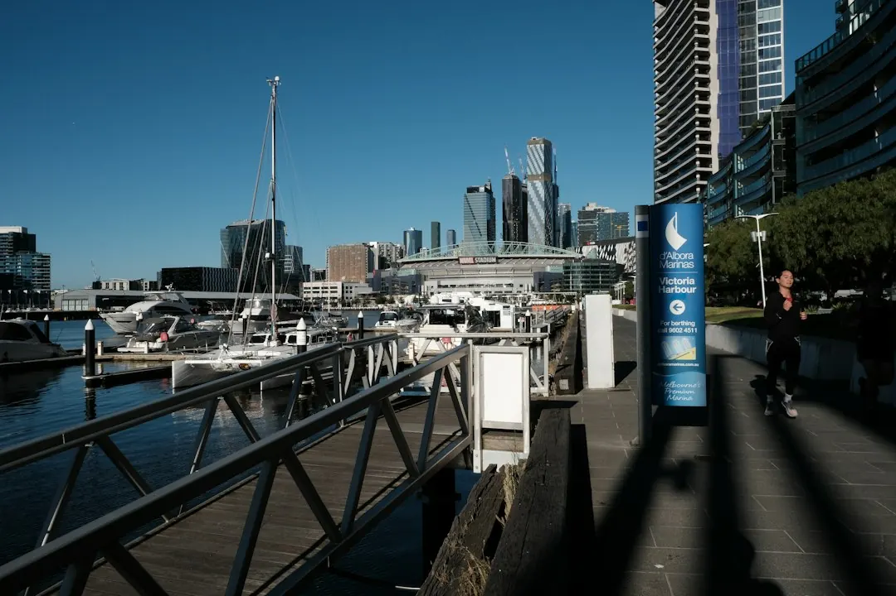

A single-phase upgrade is typically quoted at $800 to $3,500 or more, while a three-phase upgrade is typically $3,000 to $5,000 or more. The final price depends on circuit count, wiring condition and the complexity of the work. A licensed electrician should assess the board, provide a clear quote, complete the installation and issue a Certificate of Electrical Safety. Main switchboard replacement also involves an independent licensed electrical inspection.
For homeowners comparing switchboard upgrades melbourne options, the practical decision comes down to the board's condition, the number of circuits, future power needs and the certification required after the work.
Switchboard Upgrades Melbourne Explained
The first useful question is whether the existing board is still suitable for the way the home uses electricity. Older houses may still have ceramic fuse-type switchboards, rewireable fuses, no safety switches and limited spare capacity. Frequent blown fuses, circuits tripping when the heater and kettle operate together, or a board without RCD protection are practical reasons to arrange an assessment. Switchboard Upgrades Melbourne describes an assessment-led process rather than a one-size-fits-all replacement.
Look at the board without removing covers or disturbing components. Record whether it uses ceramic fuse carriers, whether safety switches are present, and which appliances regularly cause interruptions. Also note planned changes such as solar, a smart meter or new high-demand appliances. Those details help the electrician judge capacity and compatibility before the quote is prepared.
- Ask which circuits will receive circuit breakers, safety switches or RCBOs.
- Ask whether the existing wiring condition changes the proposed scope.
- Ask whether future solar, metering or appliance work should be allowed for now.
Single-phase, three-phase and protection choices
Most homes use single-phase power. A single-phase board upgrade generally replaces old fuses with modern circuit breakers and safety switches, while creating room for additional circuits. The work may be relatively straightforward, but the circuit count and condition of the existing wiring still affect the final quote.
Three-phase power is a different planning question. Larger homes, workshops and properties with higher-draw appliances may need it, and the work is scoped by the assessing electrician. Ask what equipment requires three-phase supply, whether the property already has that service, and which parts of the installation are included in the quoted scope.
An RCD safety switch is designed to cut power when it detects current leaking to earth. A circuit breaker provides protection for an individual circuit, while an RCBO combines overload protection and safety switch protection in one device. The right combination depends on the existing installation and the electrician's assessment.
Old boards, asbestos backing and new equipment
Replacing a ceramic fuse box can also involve the backing material behind the board. Some older switchboards have asbestos backing, so the removal method must be confirmed before work begins. The published guidance from the business states that a trained electrician can handle a small, sound, non-friable board within strict limits. Otherwise, a licensed asbestos removalist is required. Ask who will identify the material, who will remove it and how disposal will be handled.
Solar and smart meter plans should be raised at the first assessment, not after the board has been replaced. The board may need suitable capacity and modern circuit protection for the new equipment. A useful quote should state whether compatibility is being assessed, what equipment is included, and which future work remains separate.
For a related explanation of when the whole board may need replacing, see this guide to switchboard replacement in Melbourne.
Cost signals and quote questions
The published typical range for a single-phase upgrade is $800 to $3,500 or more. A three-phase upgrade is typically $3,000 to $5,000 or more. These are starting reference points, not fixed offers. The stated variables include the number of circuits, the condition of existing wiring, the scope of the work and its complexity.
Compare quotes by scope rather than by the headline price. Check whether the proposal includes the board, circuit breakers, safety switches or RCBOs, asbestos-related work if relevant, testing, certification and inspection. Ask whether additional wiring repairs could change the price and how that would be approved.
- What condition was found in the existing board and wiring?
- How many circuits are included in the proposed upgrade?
- Is the price for single-phase or three-phase work?
- Are certification and the required inspection included?
- What work would be treated as an additional cost?
Who this guide applies to
This guide is for Melbourne homeowners with an older ceramic fuse board, missing or limited RCD protection, repeated circuit interruptions, planned solar or smart meter work, or a need to understand single-phase and three-phase options. It is also relevant when asbestos-backed equipment may be present and the removal responsibilities need to be clarified before an electrician starts.
The appropriate next step is an assessment by a licensed electrician. Describe the board, the symptoms, the property's appliances and any planned electrical work. The electrician can then recommend whether the job is a safety switch installation, a fuse box replacement, a broader board upgrade or a more involved three-phase project.
- Describe the existing board. Provide the property details, current board type, recurring trips or blown fuses, and any planned solar, smart meter or appliance work.
- Arrange an assessment. Have a licensed electrician inspect the switchboard, wiring and circuits before recommending the scope.
- Compare the written quote. Check the circuit protection, board replacement, asbestos responsibilities, testing, certification and inspection details.
- Complete and certify the work. The electrician completes the upgrade and issues a Certificate of Electrical Safety, with an independent inspection required for main switchboard replacement.
| Option | When it may apply | Quote points to confirm |
|---|---|---|
| Single-phase upgrade | A typical home with an older board, limited protection or a need for added circuits | Circuit count, wiring condition, breakers, safety switches and certification |
| Three-phase upgrade | A larger home, workshop or property with higher-draw appliances | Existing supply, equipment requirements, complexity and inspection arrangements |
| Asbestos-backed board work | An older ceramic board where asbestos backing may be present | Material identification, authorised removal method and disposal responsibility |
Common questions
How much does a single-phase upgrade typically cost? The published typical range is $800 to $3,500 or more. Circuit count and the condition of existing wiring can affect the final quote.
How much does a three-phase upgrade typically cost? The published typical range is $3,000 to $5,000 or more. The assessing electrician scopes the work according to the property and equipment requirements.
When should asbestos backing be discussed? Discuss it whenever an older ceramic fuse board is present. The removal approach depends on the condition and type of material, and some work may require a licensed asbestos removalist.
Is a Certificate of Electrical Safety issued after the upgrade? The published process states that the completed work receives a Certificate of Electrical Safety. Main switchboard replacement also requires an independent licensed electrical inspection.
Can the board be prepared for solar or a smart meter? Ask the assessing electrician to consider solar switchboard compatibility or smart meter compatibility before the quote is finalised. The board may need suitable capacity and modern circuit protection.
This guide covers Melbourne switchboard assessment, protection choices, replacement considerations, cost signals, asbestos questions and certification steps.